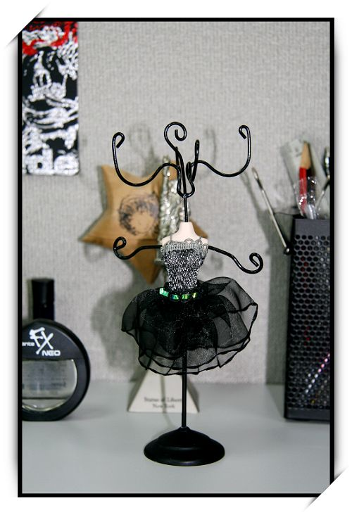

无题 @ Aug 30, 2007
***“忙”，“非常忙”，已经成为一些人生活的常态。人们见面问：“最近忙吗？”你要回答“不忙”，就有下岗待岗或无理想无能力亦无成就之嫌疑。越忙越是成功者，成了我们这个时代的新刻板印象。
《放慢生活的脚步》中写到：“匆忙的生活不可避免的会导致肤浅。”
好在这个世界上还有明白人，在这个世界上从容地生活是一种境界。从容不是懒惰，不是无聊，是明白自己到底想要什么后的神闲气定。
***我评价一个人的外貌，不太注重五官是否符合审美，而是看整体的感觉。我比较相信一个人的容貌跟他/她的心态是有内在联系的。当然，不是说心态越好的人长得就越漂亮。但是内心慈悲的人，脸上常会显现出快乐、从容的神情。久而久之，面相就越来越和谐、优美，看上去很舒服，亲切。
***失意还是诗意，完全取决于你怎么看？
***跟别人总爱唱反调，在某些人身上是因为缺乏自我肯定，在另一些人身上可能是因为个性太强。因此，那些野心很大的人，那些嫉妒心理很强的人，那些无法忍受别人比自己强，别人比自己好，别人比自己有魅力的人，都可能倾向于与他人“针锋相对”，因为唯一能显示自己重要，使自己有力量去面对对手的手段，就是否决和反对别人。有些人往往意识不到，这种辩驳的游戏是为了让自己变得重要的伎俩。

Angie寄给我的首饰架，恰好我有一个穿白纱裙的首饰架，比这款大：）放在一起很配对~
生日买的项链，粗粗的链子，末端一颗珍珠，和前年买的的耳环很配对~
10 Responses to “无题”
2007-08-30
You are talking abot philosophy, a little bit serious:) But they are right. It’s easy for one to lose himself in this modern society. Calm down and stay away may be better, and you have to giveup lure around.
2007-08-30
哦？是么？我是比较认真的人，所以有时显得不合群，哈哈~~与其花精力花时间去和没有话说的人打哈哈，不如去做自己喜欢的事情。
2007-08-30
hmmm, tolerant doesn’t mean not being serious or compromising yourself. But it is hard to judge the line.
2007-08-31
眼睛有些些红，但气色很好。
2007-08-31
你好，能加你的MSN吗？我的是lijiajia17@hotmail.com
2007-08-31
嗬嗬，如果你能猜出我是谁，我就比你还高兴：）以为你现在的生活会很忙，哈哈，没想到还是和从前一样的，希望你和你的朋友们开心健康！
2007-08-31
呵呵，你是木木吧？：）和我MSN联系哦~
2007-09-01
生活在乐趣中......
//为什么订阅你的博客显示的标题会打不开呢？
碰到两次了!
2007-09-03
不错 脸上始终保持微笑的美人儿
2007-09-10
呵呵，你果然猜不出我是谁：）提醒你一下，一个会搭讪的人，曾经看过最美丽的愤怒在雪山脚下......我上班不能用msn,你的电脑还是那个小巧的Sony吗？希望下次来宁，能有空喝茶，谈谈彼此老了多少：）祝快乐！
Leave A Reply
存档只读，评论已关闭。